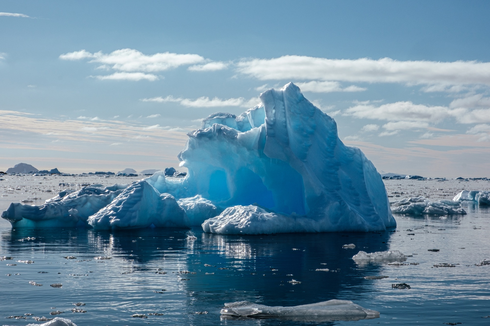
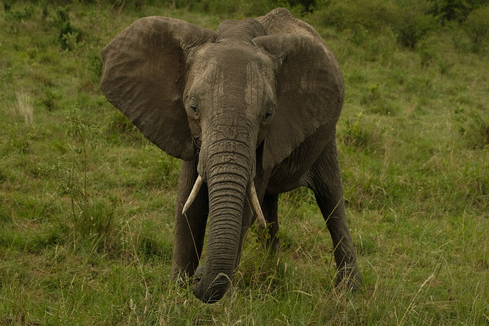
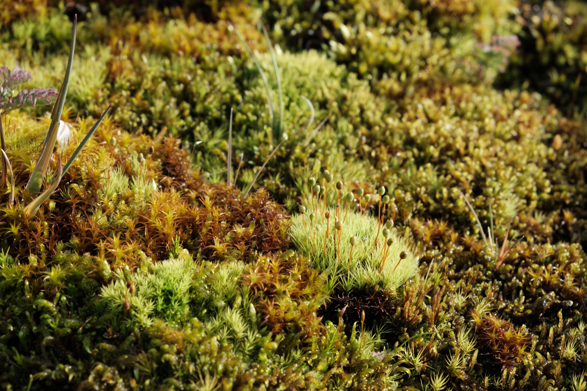

Antarctic Peninsula & South Georgia
National Geographic–Lindblad Expeditions, Visiting Scientist Program — 2026
Notes on the light, the wildlife, and the scale of the ice — written and photographed in the field.
A running catalog of expeditions and field seasons — replace each entry below with your own images and notes.

National Geographic–Lindblad Expeditions, Visiting Scientist Program — 2026
Notes on the light, the wildlife, and the scale of the ice — written and photographed in the field.

Field study semester in East Africa — 2023
A short essay on this set of images goes here.

Ongoing
MSc. research project at Université de Sherbrooke
I'm a Biology M.Sc. student and photographer currently based in Sherbrooke, Canada. I enjoy photographing events and documenting my travels — most recently in the Falklands, South Georgia, and the Antarctic Peninsula, with the National Geographic–Lindblad Expeditions Visiting Scientist Program.
where I assisted with data collection for Dr Amy Heim’s project "Bipolar Exploration of the Bryosphere", a study examining how climate change is reshaping moss‑dominated ecosystems and the microbial communities that sustain them across the polar regions.
For prints, collaborations, or inquiries — mluciagt11@gmail.com